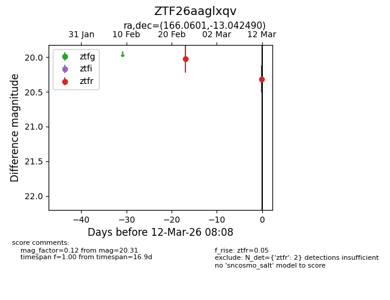
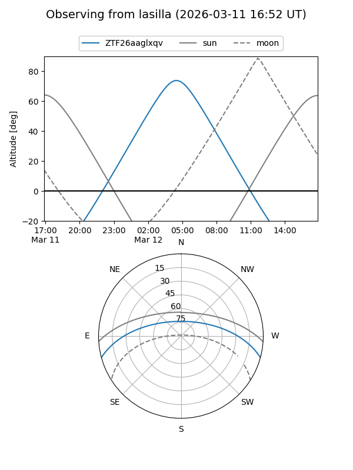
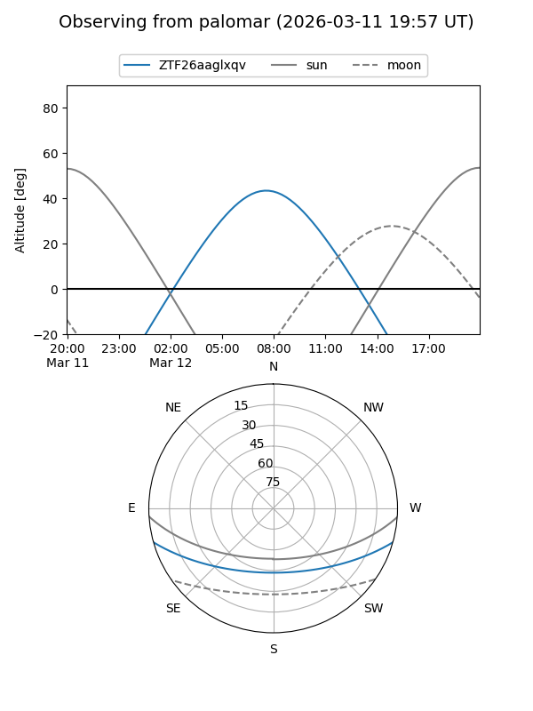
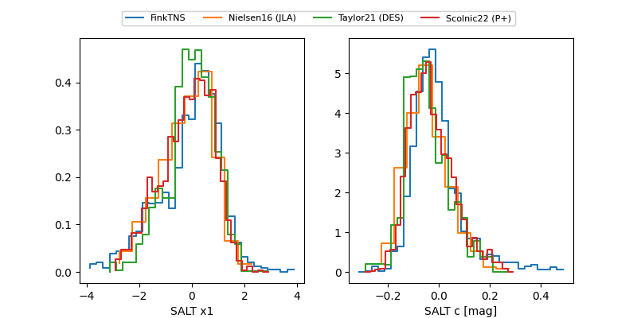

ZTF26aaglxqv
Target ZTF26aaglxqv at 2026-03-12 08:10
Aliases and brokers:
FINK: link
Lasair: link
ALeRCE: link
alt names
ZTF26aaglxqv (ztf,fink_ztf)
Coordinates:
equatorial (ra, dec) = 166.0601,-13.04249
equatorial (HMS+DMS) = 11:04:14.43,-13:02:32.96
galactic (l, b) = (266.6048,+42.14419)
Flags:
Photometry:
last ztfr=20.31
2 ztfr detections
Lightcurve

Visibility


Additional plots
